Il rituale di 15 minuti da fare a casa, con le cuffie, per prenderti cura della memoria dopo i 50
«Il nome che non ti viene in mente non è solo colpa dell'età. In questa pagina ti spiego cosa dice la ricerca e un'abitudine di 15 minuti da fare a casa, ogni giorno.»
Dott. Marco Bellini, neurologo
Un neurologo ti spiega, fonte per fonte, cosa dice la ricerca sulla memoria dopo i 50 anni.
Scopri il rituale di 15 minuti da fare a casa, da seduti: per cominciarlo ti basta il pollice.
Uno studio pubblicato su Neurology collega una proteina del cervello, il BDNF, a una memoria che regge negli anni.1 Ce l'hai anche tu, adesso.
Le ricerche citate in questa pagina sono state pubblicate su:
The Journal of Neuroscience · Neurology · Nature · Cell · PNAS · BMJ · PLOS ONE
COME È POSSIBILE ricordare il giorno del tuo matrimonio, ma non dove hai appoggiato gli occhiali dieci minuti fa?
Il ricordo, spesso, c'è ancora. È il richiamo che si inceppa: gli studiosi lo chiamano fenomeno della punta della lingua, e lo studiano dal 1966.2,3
E una parte della risposta riguarda una proteina del cervello che i ricercatori chiamano BDNF.4,5 Io, per farla semplice, la chiamo la proteina della memoria.
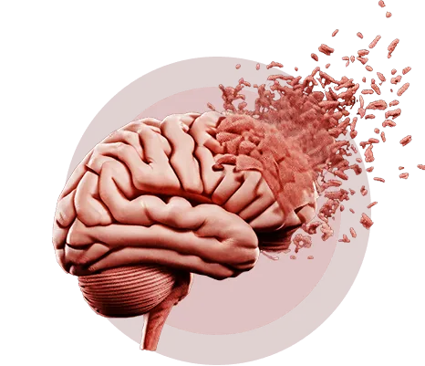
Questa proteina ce l'hai.
È nel tuo cervello, adesso.6
Ma con gli anni il suo livello nel sangue tende a calare: lo ha visto uno studio su 142 persone anziane, pubblicato su The Journal of Neuroscience.7
E in quello studio, chi ne aveva meno aveva anche un ippocampo più piccolo, la zona della memoria, e andava peggio nei test di memoria.8
Il segreto che ti racconto oggi non è una dieta, non è la palestra, non sono pillole e non è il Sudoku.
È un rituale di 15 minuti da fare a casa, ogni giorno, sempre alla stessa ora.
E per cominciarlo ti basta il pollice: quello con cui premi play.
Pensavi a qualcos'altro? Lo capisco.
Il rituale di 15 minuti da fare a casa, con le cuffie, nato dalle ricerche sul suono e sulla memoria
La proteina della memoria è legata a una memoria che regge nel tempo.9
Aiuta le cellule del cervello a restare collegate tra loro.10,11
Aiuta a creare collegamenti nuovi.12
Ed è molto presente nell'ippocampo, la zona che lavora di più quando impari e ricordi.13
I ricercatori la studiano dagli anni Ottanta.14
Ne parlano riviste come Neurology, PNAS e The Journal of Neuroscience.15,16,17
Eppure, fuori dai laboratori, quasi nessuno te ne parla.
Per questo te la spiego adesso, con parole semplici e con le fonti, una per una.
I superanziani: lo studio di Harvard di cui forse non hai mai sentito parlare
Dott. Marco Bellini, neurologo
Mi chiamo Marco Bellini, sono neurologo e mi occupo di memoria.
Tutto parte da un gruppo di anziani che i ricercatori di Harvard hanno studiato da vicino: persone tra i 60 e gli 80 anni con una memoria pari, o perfino migliore, di quella di chi ha 20 o 30 anni di meno.18,19
Resta con me. Adesso viene il bello.
Ti sei mai chiesto perché alcune persone restano lucidissime a 70 e a 80 anni?
Mentre altre non ricordano dove hanno lasciato le chiavi della macchina, o cosa si sono dette al telefono il giorno prima?
La ricerca dice che non è solo una questione di età.20 E adesso te lo mostro.
Piccolo, sotto la foto: Il dott. Marco Bellini collabora con Benessere Ogni Giorno, che vende La Melodia della Memoria.
La scoperta dei ricercatori di Harvard
Un gruppo del Massachusetts General Hospital e della Harvard Medical School ha confrontato i superanziani con anziani della loro età e con ragazzi tra i 18 e i 32 anni.21,22
Nei test di memoria, i superanziani se la cavano come i ragazzi.23
Ricordano una lista di parole anche a distanza di tempo, come chi potrebbe essere loro nipote.24
I loro ricordi reggono.
Lo studio, pubblicato su The Journal of Neuroscience, ha visto anche un'altra cosa: in alcune zone del cervello che servono alla memoria, i superanziani erano indistinguibili dai ragazzi.25
Vuol dire che, in quelle zone, il loro cervello non si è rimpicciolito come quello dei coetanei.26,27
Settant'anni, ma in alcune zone un cervello da ragazzo
Da neurologo, la domanda che mi interessa è una sola: come fanno?
Che cosa hanno di diverso i superanziani dagli altri?
Non sono geni e non fanno niente di strano. Fanno la spesa, guidano, raccontano una barzelletta senza sbagliare il finale.
Lo studio di Harvard ha guardato la forma del cervello.28 Un'altra ricerca, invece, è andata a guardare dentro: a una proteina.29
La proteina della memoria che i ricercatori misurano negli anziani
Nel 2016 la rivista Neurology ha pubblicato uno studio su 535 persone anziane, seguite per anni.30
Dopo la loro morte, i ricercatori hanno misurato il BDNF nel tessuto del cervello che avevano donato alla ricerca. Chi ne aveva di più aveva perso memoria e lucidità più lentamente negli anni precedenti: il declino era circa dimezzato, rispetto a chi ne aveva di meno.31
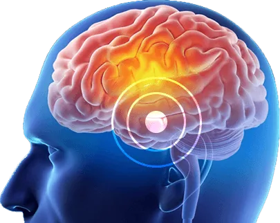
E in uno studio su 142 anziani senza demenza, il BDNF nel sangue era più basso con l'avanzare dell'età.32
Ma non dare subito la colpa all'età.
Il livello di questa proteina non è un numero fisso. Si muove. E adesso ti faccio vedere perché conta.
Lascia che ti mostri.
BDNF: la proteina della memoria
BDNF sta per Brain-Derived Neurotrophic Factor, in italiano fattore neurotrofico derivato dal cervello. È una proteina che è nel tuo cervello proprio adesso.33
Fattore neurotrofico derivato dal cervello (BDNF): appartiene alla famiglia delle neurotrofine, la stessa del fattore di crescita nervoso, l'NGF. È stato isolato per la prima volta nel 1982. La parola «neurotrofico» viene dal greco: neuron, nervo, e trophé, nutrimento. Letteralmente, un nutrimento per i neuroni.34,35,36
Per questo la chiamo la proteina della memoria. John Ratey, psichiatra di Harvard, è andato oltre: nel suo libro Spark, del 2008, parlando dell'attività fisica, l'ha chiamata un concime miracoloso per il cervello.37
E non è finita.
Immagina il tuo cervello come una grande città, con strade e collegamenti che permettono a tutti di spostarsi e di fare il proprio lavoro.
Proteine come il BDNF sono gli operai che tengono in funzione la città: aiutano a costruire strade nuove, a tenere in buono stato quelle vecchie e a far sì che i lavoratori del cervello, i neuroni, restino in salute e collegati tra loro.38,39
Il Dott. Marco Bellini, neurologo:
«Questa proteina aiuta i neuroni a crescere, a restare collegati e a fissare i ricordi»
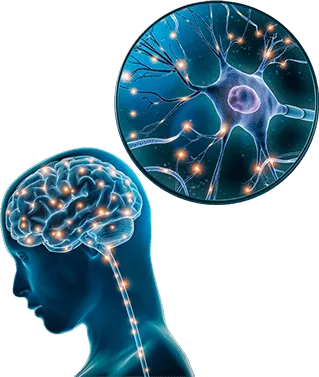
Ma il BDNF fa anche di più.
Sostiene la crescita e la sopravvivenza dei neuroni, cioè degli abitanti della città.40,41
Ed è per questo che i neuroscienziati lo studiano così tanto.42,43
Le revisioni scientifiche lo legano alla memoria e all'ippocampo.44
E negli esperimenti sui ratti, il BDNF nell'ippocampo è servito a far durare nel tempo i ricordi a lungo termine: una specie di «ponte» tra quello che si impara oggi e quello che si ricorda nei giorni successivi.45
Te l'avevo detto che era una proteina speciale, vero?
E c'è dell'altro.
In più, aiuta i collegamenti tra le cellule del cervello e sostiene quelle che hai già
Il BDNF è uno dei regolatori principali della plasticità sinaptica: la capacità del cervello di rafforzare i collegamenti tra le cellule quando impari qualcosa di nuovo.46
E sostiene la sopravvivenza delle cellule che hai già, quelle in cui sono custoditi i tuoi ricordi.47,48
Più collegamenti saldi vuol dire più strade aperte, in quella grande città che è il tuo cervello.
Da quando è stato isolato, nel 1982, il BDNF è stato studiato in laboratori di tutto il mondo, e una cosa è chiara: è una proteina chiave per la memoria.49,50
La causa sorprendente di una testa che rallenta
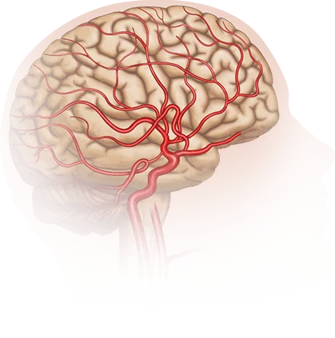
Il problema è che la vita di oggi non aiuta la proteina della memoria.51,52
Negli esperimenti sui ratti, una dieta ricca di grassi e di zuccheri raffinati ha fatto calare il BDNF nell'ippocampo, e i ratti imparavano peggio.53
Ma il primo nemico della proteina della memoria è il tempo che passa.54
Uno studio inglese su oltre 7.000 impiegati pubblici di Londra ha visto che memoria e ragionamento cominciano a calare già tra i 45 e i 49 anni.55,56
E con gli anni il BDNF nel sangue cala, mentre l'ippocampo, la zona della memoria, si fa più piccolo.57
Nello stesso studio, chi aveva meno BDNF aveva un ippocampo più piccolo e una memoria più debole, anche a parità di età.58
E non è tutto.
Cosa rende la testa più lenta dopo i 50
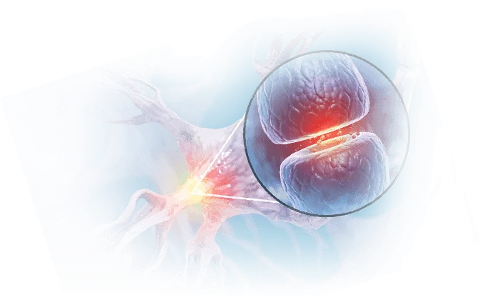
Il BDNF serve a mantenere e a rafforzare i collegamenti tra le cellule del cervello. E sono proprio quei collegamenti che usi per imparare e per ritrovare un ricordo.59
Si sa che le persone con l'Alzheimer hanno, in media, meno BDNF nel sangue: lo dice una meta-analisi del 2019, che ha messo insieme gli studi disponibili.60
Ma il dato più interessante riguarda le persone senza malattia: nello studio di Neurology, tra anziani seguiti per anni, chi aveva più BDNF nel cervello aveva perso memoria più lentamente.61
La domanda giusta: la proteina della memoria si può tenere sveglia?
Voglio che tu capisca bene una cosa: la testa annebbiata e i nomi che non arrivano non sono solo colpa dell'età.
Il tempo gioca contro tutti: con gli anni, la proteina della memoria tende a calare.62
Ma il suo livello non è un numero fisso: si muove. E su questo si può fare qualcosa, a partire da oggi. Anche tu.
Ecco 6 strade studiate dalla scienza per la tua proteina della memoria, a partire da oggi
Ecco le 6 strade di cui parla la ricerca, con la più facile tenuta per ultima:
1. Il movimento.
In uno studio svedese su 97 persone sane tra i 65 e i 75 anni, dopo l'attività fisica il BDNF nel sangue saliva, e chi aveva l'aumento più grande imparava meglio negli esercizi fatti subito dopo.63
Camminare fa bene, e se puoi, continua.64 Ma non tutti riescono a fare sport con costanza, ogni settimana, per anni.
2. Il caldo, come in sauna.
In uno studio del 2020, dieci settimane di sedute di caldo hanno fatto salire il BDNF nel sangue. Ma in ragazzi sani di circa vent'anni.65
E poi, chi ha una sauna in casa? Costa cara, e andarci ogni giorno non è da tutti. Il bagno nel ghiaccio, poi, è per pochi coraggiosi.
3. Meditazione e yoga, per mesi.
Questa è curiosa.
In uno studio americano, 38 persone che hanno passato 3 mesi in un ritiro di yoga e meditazione avevano più BDNF nel sangue alla fine del ritiro.66
E in uno studio su oltre 4.000 tibetani sopra i 60 anni, l'Alzheimer era raro, e la pratica religiosa delle prostrazioni era associata a meno casi.67 Ma quante persone possono passare 3 mesi in un ritiro?
4. Quello che metti nel piatto.
Il BDNF risponde anche al cibo: lo spiega una rassegna pubblicata su Nature Reviews Neuroscience.68
E all'Università degli Studi di Milano hanno raccolto più di cento studi su 14 piante e sul loro rapporto con il BDNF: tra queste il caffè, l'olio d'oliva, il tè verde, lo zafferano e la vite.69
Mangiare bene fa bene, ci mancherebbe. Ma per dire quale cibo aiuta la memoria, e quanto, servono ancora studi sulle persone.70
5. Gli integratori.
Alcune piante usate negli integratori, come la bacopa e il ginkgo, sono studiate proprio per il loro rapporto con il BDNF.71
Ma con gli integratori i problemi sono due.
Il primo: il cervello è protetto da una barriera, e più del 98% dei farmaci a piccola molecola non riesce ad attraversarla. E quello che ingoi, prima di arrivare al cervello, deve passare proprio da lì.72
Il secondo: il costo. Una confezione si compra, si finisce e si ricompra. E si ricomincia a pagare, mese dopo mese.
6. Un suono con un ritmo preciso.
Il Dott. Marco Bellini, neurologo:
La strada più facile da seguire ogni giorno
È di gran lunga la più semplice, e c'è una traccia pensata proprio per questo. Ma prima lascia che ti spieghi perché.
Chi ha creato La Melodia della Memoria partiva da tre regole: doveva essere semplice, si doveva poter fare a casa, da seduti, e doveva costare meno di quello che si spende ogni mese in farmacia.
Niente attrezzi, niente app complicate, niente esercizi da imparare: qualcosa che una persona di settant'anni potesse fare da sola, senza chiedere aiuto al nipote.
Ma una cosa così esisteva davvero?
La risposta è sì. Ma la svolta non è arrivata dall'Italia.
È arrivata da un laboratorio del MIT, a Cambridge, negli Stati Uniti.73,74
Lì il gruppo della neuroscienziata Li-Huei Tsai studia come il cervello risponde a luce e suono ritmati.75,76,77
E nel 2019, sulla rivista Cell, ha pubblicato un risultato curioso.
Il suono a 40 impulsi al secondo
I ricercatori hanno fatto ascoltare a topi di laboratorio, allevati per avere problemi di memoria simili all'Alzheimer, un suono ritmato a 40 impulsi al secondo, un'ora al giorno per una settimana.78
Dopo quella settimana, i topi se la cavavano meglio nei test di memoria.79
E nel 2022 uno studio sulle persone ha provato luce e suono a 40 impulsi su 15 pazienti con una demenza lieve: il trattamento si è dimostrato sicuro e ha dato un primo segnale positivo in un test di memoria.80
Perché proprio un suono? Perché è la strada più facile da portare a casa: basta un paio di cuffie.
Da questi studi81,82 è partita l'idea: un ritmo preciso, a 40 impulsi al secondo, dentro una musica calma, da ascoltare ogni giorno come abitudine.
È così che è nata La Melodia della Memoria.
Immagina di non dover scegliere tra ore di palestra, saune, ritiri di meditazione e scatole di integratori. Ti siedi, metti le cuffie e ascolti.
Questa traccia di 15 minuti si chiama La Melodia della Memoria, e la ascolti dalla tua area personale, dal telefono o dal computer.
È fatta in italiano, per chi ha passato i 50 anni.
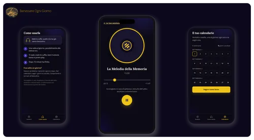
La Melodia della Memoria è una traccia audio di 15 minuti: una musica calma con dentro un ritmo preciso, a 40 impulsi al secondo, da ascoltare ogni giorno, sempre alla stessa ora.
All'inizio una voce in italiano ti dice cosa fare: come sederti, a che volume tenerla, quando chiudere gli occhi se ti va.
Ed è semplice: la fai a casa.
Ti siedi con un paio di cuffie, quelle che hai già vanno benissimo, premi play e ascolti.
Poi parte la musica, calma, senza parole e senza sorprese. Dentro c'è il ritmo, regolare, che senti appena. Alla fine la voce torna e ti dice che hai finito.
La fai nella tranquillità di casa tua.
E non devi meditare, non devi ripetere frasi e non devi scrivere niente.
La ascolti una volta al giorno, sempre alla stessa ora. Perché? Perché un'abitudine si tiene meglio quando la attacchi a una cosa che fai già, come il caffè del mattino.83
Il caffè lo prendi tutti i giorni. Le cuffie stanno lì accanto.
Hai passato i 50? Ecco per chi è La Melodia della Memoria, e per chi no
È per te se ti capita di cercare un nome che conosci benissimo, di entrare in cucina e non ricordare più cosa dovevi prendere, di perdere il filo a metà frase mentre racconti qualcosa ai nipoti.
È per te se vuoi fare una cosa semplice ogni giorno, a casa, per prenderti cura della tua memoria. Non è una pillola e non è una medicina: è un ascolto di 15 minuti. Si aggiunge a quello che fai già e non toglie niente: se prendi integratori o farmaci, puoi continuare.
Non è per te se non hai 15 minuti al giorno, anche se di solito si trovano. E non è per te se hai l'epilessia o disturbi dell'udito: in questi casi è sconsigliata.
Ecco com'è una mattina con la routine. La moka sul fuoco. Ti siedi in poltrona, metti le cuffie e premi play con il pollice. La voce ti dice di tenere il volume basso e di respirare con calma. Poi parte la musica. Dopo 15 minuti la voce ti dice che hai finito, e, se vuoi, segni il giorno sul calendario.
I momenti per cui è nata La Melodia della Memoria
La Melodia della Memoria è molto più facile di ore di palestra e di meditazione, e costa meno che ricomprare ogni mese una confezione di integratori.
È il momento di prenderti cura della tua testa ogni giorno, come ti prendi cura di tutto il resto.
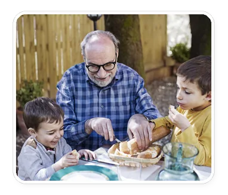
Pensa al pranzo della domenica: tuo nipote racconta la partita, e tu vuoi seguirlo dall'inizio alla fine, con i nomi, i gol, tutto.
Pensa alla telefonata con l'amica di sempre, quando il discorso fila liscio, senza intoppi.
Pensa alla tombola di Natale e al compleanno della nipotina, con le storie di famiglia raccontate dall'inizio alla fine.
Pensa a quando incontri una vecchia amica al mercato e vuoi salutarla per nome, con un sorriso.
Sono questi i momenti che La Melodia della Memoria vuole aiutarti a vivere con la testa presente. E poi c'è la cosa che conta più di tutte: continuare a fare le tue cose in autonomia, a modo tuo, senza chiedere ai figli di ricordartele.
Quindici minuti, ogni mattina. Il caffè, le cuffie, e la giornata che comincia con calma.
Puoi cominciare domani mattina, quando prendi La Melodia della Memoria.
«Quanto costa La Melodia della Memoria?»
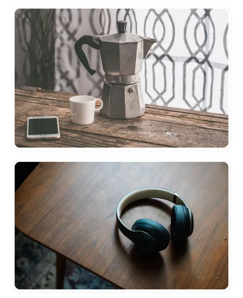
Dott. Marco Bellini, neurologo
Sono neurologo, e ho dedicato i miei studi alla salute cognitiva. Non ti chiedo di fidarti del mio titolo: in questa pagina ti ho mostrato gli studi, con le fonti, uno per uno.
Prima del prezzo, pensa a cosa fa oggi chi cerca una soluzione in farmacia. Un integratore per la memoria si compra, si usa a casa e poi si finisce. E quando la confezione finisce, si ricomincia a pagare.
La Melodia della Memoria è pensata in modo diverso: si paga una volta sola e resta tua per sempre, senza doverla ricomprare.
E adesso pensaci un momento.
Quanto vale, per te, svegliarti la mattina e sentirti la testa leggera, pronta per la giornata?
Quanto vale non perdere il filo quando parli con le persone a cui vuoi bene?
Quanto vale raccontare una storia ai nipoti senza fermarti a metà a cercare un nome?
Quanto vale salutare per nome una vecchia amica, senza quell'attimo di imbarazzo?
Quanto vale continuare a fare tutto da solo, a modo tuo, senza chiedere a nessuno di ricordarti le cose?
Quanto vale prenderti 15 minuti al giorno solo per te?
E quanto ti è costato, finora, riempire l'armadietto di scatole lasciate a metà?
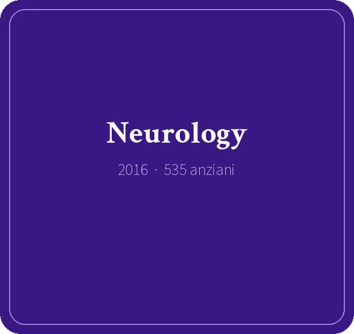
Ricorda lo studio pubblicato su Neurology: tra 535 anziani, chi aveva più proteina della memoria nel cervello aveva perso memoria e lucidità più lentamente.84
Per questo vale la pena prendersene cura ogni giorno, come ti prendi cura di tutto il resto.
Il prezzo è uno solo: 24,90 €, IVA inclusa, una volta sola.
Nessun abbonamento, nessun addebito il mese dopo, niente da rinnovare.
La Melodia della Memoria si acquista da questa pagina
Non la trovi in farmacia: è una traccia digitale, e arriva direttamente a te, via email. Si acquista da questa pagina, sulla pagina di pagamento sicura di Hotmart.
E sappi che la traccia resta tua per sempre: la ascolti tutte le volte che vuoi.
Clicca il pulsante qui sotto e vai al pagamento sicuro.
Benessere Ogni Giorno · La Melodia della Memoria
La Melodia della Memoria · Soddisfatti o rimborsati per 30 giorni
Sotto il pulsante, piccolo: Si apre la pagina di pagamento sicura di Hotmart. Puoi pagare con Carta, PayPal, Apple Pay, Google Pay.
Soddisfatti o rimborsati per 30 giorni: provala a casa tua, poi decidi tu se tenerla
Per renderti la scelta semplice, il tuo ordine è coperto da una garanzia di 30 giorni: se La Melodia della Memoria non fa per te, chiedi il rimborso entro 30 giorni dall'acquisto e ti torna l'intero importo.
Questo vuol dire che non devi decidere adesso. Non devi dire sì. Ti basta un forse: hai 30 giorni per provarla.
Nei prossimi 30 giorni fai così. Ogni mattina il caffè, le cuffie, 15 minuti. Poi, se vuoi, segni il giorno sul calendario. E intanto guarda le tue giornate: le telefonate, il pranzo della domenica, le storie ai nipoti, la lista della spesa. Poi decidi tu se tenerla.
Il primo giorno lo scegli tu: sul calendario scrivi la data accanto al Giorno 1, e cominci.
E se in questi 30 giorni hai un dubbio su come si usa, scrivi all'assistenza di Benessere Ogni Giorno, a contatto@lamelodiadellamemoria.com. Chiedere non ti costa niente.
Prova La Melodia della Memoria per 30 giorni, senza rischi
Trenta giorni sono il tempo giusto: bastano per completare tutto il calendario di 4 settimane.
In questi 30 giorni provi tutto quello che ricevi. La traccia di 15 minuti, sempre uguale: all'inizio la voce ti dice di metterti le cuffie, di sederti in una posizione comoda, di tenere il volume basso, di chiudere gli occhi se ti va e di respirare con calma, e ti ricorda che è sconsigliata se hai l'epilessia o disturbi dell'udito. La guida «Come usarla», con una pagina per ogni cosa: cosa senti nei 15 minuti, le cuffie e il volume, dove e come sederti, a che ora conviene, come entri dal telefono, dal tablet o dal computer, cosa fare se salti un giorno, le avvertenze e l'assistenza. E il calendario di 28 giorni, una settimana per pagina, con lo spazio per la data, per una X, per l'ora e per una nota, se vuoi.
Per Benessere Ogni Giorno è importante che tu dica sì con la massima tranquillità. Non importa quante volte l'avrai ascoltata: se chiedi il rimborso entro 30 giorni dall'acquisto, ti torna ogni centesimo.
Il rimborso lo chiedi su Hotmart, la piattaforma che gestisce il pagamento: vai su refund.hotmart.com, inserisci il codice dell'acquisto (comincia con HP e lo trovi nell'email di Hotmart con l'accesso) e l'email che hai usato per pagare; poi ti arriva un codice di verifica da inserire. Se hai bisogno di una mano, scrivi all'assistenza di Benessere Ogni Giorno, a contatto@lamelodiadellamemoria.com, e ti spiega come fare. I soldi tornano sullo stesso metodo di pagamento che hai usato. Con il rimborso, l'accesso alla traccia si chiude.
Per qualsiasi dubbio, basta un'email a contatto@lamelodiadellamemoria.com.
Per prendere La Melodia della Memoria a 24,90 €, con 30 giorni per provarla, clicca il pulsante qui sotto e completa l'ordine su Hotmart.
Il rischio è tutto di Benessere Ogni Giorno. L'unico rischio vero è restare dove sei, e chiederti fra un anno come sarebbe andata.
Completa l'ordine qui sotto e prova a casa tua, per 30 giorni e senza rischi, tutto quello che ti ho raccontato. Ti basta cliccare il pulsante qui sotto.
Benessere Ogni Giorno · La Melodia della Memoria
La Melodia della Memoria · Soddisfatti o rimborsati per 30 giorni
Sotto il pulsante, piccolo: Si apre la pagina di pagamento sicura di Hotmart. Puoi pagare con Carta, PayPal, Apple Pay, Google Pay.
Cosa succede quando clicchi?
Si apre la pagina di pagamento di Hotmart, la piattaforma che gestisce l'ordine: inserisci i tuoi dati, scegli come pagare e confermi. Il prezzo è 24,90 €, una volta sola.
È una pagina protetta, con connessione sicura, come quella dei grandi negozi online.
Di solito ricevi l'email con l'accesso pochi minuti dopo la conferma del pagamento. Dal link entri nella tua area personale: traccia, guida e calendario.
È tutto digitale: non arriva niente per posta, non paghi spedizioni e non serve nessun apparecchio. Ti bastano un telefono, un tablet o un computer con internet, e un paio di cuffie qualsiasi.
E adesso ti mostro cosa trovi nella tua area, uno per uno.
Cosa trovi nella tua area appena completi l'ordine
Primo: la traccia della Melodia della Memoria
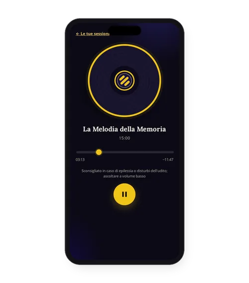
Incluso · 1
La traccia di 15 minuti esatti, da ascoltare dal telefono, dal tablet o dal computer, quando vuoi e tutte le volte che vuoi. All'inizio una voce in italiano ti dice cosa fare, poi parte la musica, calma, con dentro il ritmo, e alla fine la voce ti dice che hai finito. Se cambi telefono, rientri nella tua area e la ritrovi.
Secondo: la guida «Come usarla»
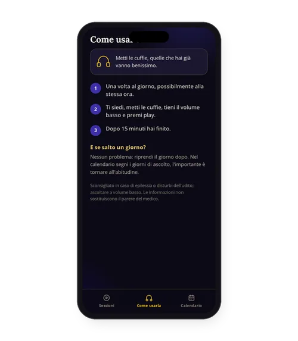
Incluso · 2
Poche pagine, scritte grandi, in italiano. Ti spiegano dove sederti, a che volume ascoltare, a che ora conviene e cosa fare se salti un giorno. Così sai sempre cosa fare, senza chiedere aiuto a nessuno.
Terzo: il calendario di 4 settimane
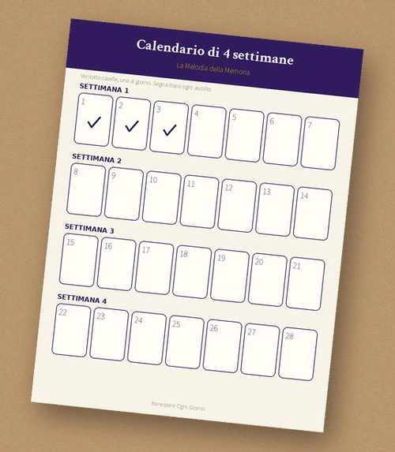
Incluso · 3
Ventotto giorni, uno per riga. Lo stampi e, se vuoi, ogni giorno scrivi una X sul giorno. Se non hai la stampante, lo apri sul telefono e, se ti va, ti segni i giorni su un foglio. Se le segni, è un gesto piccolo, ma vedere le X che si accumulano ti aiuta a non mollare. Tutto in italiano, tutto in un'unica area, con un solo pagamento.
Se hai due orecchie e 15 minuti al giorno, puoi cominciare domani mattina
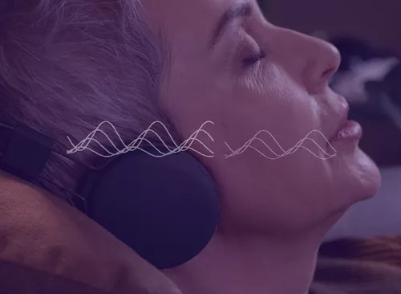
Ti invito a decidere oggi: a prenderti cura della tua memoria ogni giorno, come ti prendi cura di tutto il resto. Clicca il pulsante qui sotto e prendi La Melodia della Memoria.
C'è solo un favore che ti chiedo: quando l'avrai provata, scrivi all'assistenza di Benessere Ogni Giorno, a contatto@lamelodiadellamemoria.com, e racconta com'è andata.
Adesso tocca a te. Puoi andare avanti come hai fatto finora, oppure puoi provare La Melodia della Memoria per 30 giorni, senza rischi. Ci metti 15 minuti al giorno, e hai un'abitudine nuova tutta da guadagnare.
Se non fa per te, non ci perdi un centesimo: chiedi il rimborso entro 30 giorni e ti torna tutto.
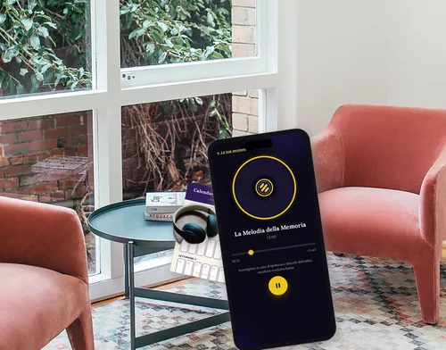
La garanzia non è solo una regola della piattaforma: è un impegno che Benessere Ogni Giorno prende con te. È semplice.
Clicca il pulsante qui sotto: l'accesso ti arriva per email dopo la conferma del pagamento.
Benessere Ogni Giorno · La Melodia della Memoria
La Melodia della Memoria · Soddisfatti o rimborsati per 30 giorni
Sotto il pulsante, piccolo: Si apre la pagina di pagamento sicura di Hotmart. Puoi pagare con Carta, PayPal, Apple Pay, Google Pay.
Domande frequenti su La Melodia della Memoria
Sei ancora qui? Stai ancora decidendo? Va benissimo. Mentre ci pensi, rispondo alle domande che probabilmente ti stai facendo.
Domanda 1: che cosa ha di diverso La Melodia della Memoria rispetto al movimento, agli esercizi per la memoria o agli integratori?
Il movimento fa bene al BDNF: nello studio svedese, dopo l'attività fisica il BDNF nel sangue saliva, in persone tra i 65 e i 75 anni.85 Ma non tutti riescono a fare sport con costanza, ogni settimana, per anni. Se puoi camminare, continua.
In un altro studio, del 2011, 120 adulti anziani hanno fatto esercizio aerobico per un anno: l'ippocampo, la zona del cervello che lavora di più quando impariamo e ricordiamo, è cresciuto in media del 2%, e chi aveva l'ippocampo cresciuto di più aveva anche più BDNF nel sangue.86
Poi ci sono la meditazione e lo yoga. Nello studio sul ritiro, il BDNF è salito dopo 3 mesi passati in ritiro.87 Quasi nessuno ha 3 mesi da dedicare a questo, né deve averli per ascoltare La Melodia della Memoria.
Con gli integratori, il problema non è solo il costo di una confezione che finisce e si ricompra. È anche la barriera che protegge il cervello: più del 98% dei farmaci a piccola molecola non la attraversa.88
E gli esercizi per la memoria? Guarda cosa ha trovato uno studio pubblicato nel 2018 sul British Medical Journal. I ricercatori hanno seguito 498 persone nate in Scozia nel 1936, per circa 15 anni. Chi faceva più attività di ragionamento partiva da un livello più alto. Ma con gli anni, le capacità mentali calavano alla stessa velocità degli altri.89
E la meditazione, per la memoria? Una sintesi del 2022 ha messo insieme 30 studi su persone anziane: sulla memoria un effetto c'era, ma piccolo.90
E cosa cambia perfino la forma del cervello? Imparare una lingua nuova. Nel 2012, in Svezia, alcuni giovani interpreti militari hanno studiato una lingua per tre mesi, in modo intensivo: alla fine, l'ippocampo era più grande.91 Prova l'inglese, lo spagnolo o il tedesco: i tuoi amici resteranno a bocca aperta.
E il suono? È la strada su cui lavora il gruppo di Li-Huei Tsai, al MIT. Nel 2016 ha usato una luce che lampeggia 40 volte al secondo, nei topi.92 Nel 2019 ha aggiunto il suono, sempre nei topi.93 E nel 2022 un primo studio su 15 pazienti con una demenza lieve ha trovato sicura la stimolazione con luce e suono.94 La Melodia della Memoria usa la stessa frequenza, 40 impulsi al secondo, dentro una musica calma.
Ecco perché La Melodia della Memoria è fatta così: chiede solo 15 minuti al giorno. Tutti possono trovare 15 minuti per mettere le cuffie e ascoltare una musica calma. Non è un'altra pillola da ingoiare: è un momento tuo, ogni giorno.
Domanda 2: come si usa, esattamente?
Ottima domanda. È semplice, e lo fai a casa: apri l'email di accesso ed entri nella tua area, dal telefono o dal computer.
La traccia è già pronta. Tu devi solo sederti, rilassarti e ascoltare.
Dopo 15 minuti la traccia finisce, e hai finito. Tutto qui.
Niente esercizi. Niente pillole. Niente da scrivere.
Puoi ascoltarla in poltrona dopo colazione, sul divano dopo pranzo o in camera, con la porta chiusa. Ascoltala sempre da seduti e in tranquillità, mai mentre guidi o cammini per strada: è un momento di calma, non un sottofondo. Il modo più comodo è attaccarla a una cosa che fai già, come il caffè del mattino.
E se salti un giorno? Non succede niente di grave. Riprendi il giorno dopo.95,96 Nel calendario, se vuoi, segni i giorni in cui hai ascoltato: l'importante è tornare all'abitudine.
Domanda 3: dopo quanto tempo noto qualcosa?
Ognuno è diverso.
Ti chiedo una cosa sola: quattro settimane, e se vuoi una X al giorno sul calendario.
E intanto osserva le tue giornate: una telefonata, un nome, la lista della spesa, il pranzo della domenica.
Una cosa, però, te la posso dire subito: per 15 minuti al giorno ti fermi. Solo tu, le cuffie e la musica.
Il modo migliore per scoprire se fa per te è provarla. Hai sempre la garanzia di 30 giorni.
Domanda 4: ci sono effetti collaterali? È sicura da usare a lungo?
La Melodia della Memoria non è un farmaco e non è una pillola. È un audio da ascoltare a volume basso, con le cuffie. Non si ingoia niente e non entra niente nel corpo: sono 15 minuti di musica calma.
Tieni il volume basso, come ti dice la voce all'inizio della traccia. Ed è sconsigliata se hai l'epilessia o disturbi dell'udito.
Nello studio del 2022, la stimolazione con luce e suono a 40 impulsi si è dimostrata sicura nei 15 pazienti che l'hanno provata.97 E la proteina della memoria, il BDNF, è studiata dagli anni Ottanta.98
Domanda 5: mi può aiutare nel lavoro, o nelle cose che faccio ogni giorno?
Quanto conta la testa in quello che fai? Nel lavoro, nel volontariato, nei conti di casa. Ricordare il nome di un cliente, un appuntamento, la scadenza di una bolletta. Trovare l'idea giusta al momento giusto. È tutta testa.
E la creatività? Nel 2013, all'Università di Leida, in Olanda, hanno fatto ascoltare ai partecipanti 3 minuti di battiti binaurali, un tipo di suono ritmato. In alcune persone la capacità di trovare tante idee diverse è migliorata. In altre no.99
La Melodia della Memoria, invece, usa 40 impulsi al secondo, come gli studi del MIT:100,101 è una scelta di chi l'ha prodotta. E il tuo appuntamento di 15 minuti resta lo stesso, ogni giorno.
Domanda 6: devo cambiare alimentazione o mangiare cibi speciali?
No.
Avrai visto video e articoli che ti dicono che certi cibi «uccidono» la memoria, o che certi superalimenti la salvano. Mangiare bene fa bene, ci mancherebbe. Ma La Melodia della Memoria non ti chiede di cambiare niente a tavola.
Su internet trovi un consiglio, e il giorno dopo il suo contrario. È diventato un labirinto, e mi dispiace che tu debba districarti in tutto questo. Stai solo cercando di fare la cosa giusta per la tua testa, la tua salute e la tua famiglia. E per questo ti faccio i miei complimenti.
Domanda 7: posso farla insieme ad altre cose, come gli esercizi per la memoria o la meditazione?
Certo che puoi. Ma falle perché ti piacciono. La Melodia della Memoria si aggiunge, non toglie niente. E se oggi prendi già un integratore o dei farmaci, puoi continuare.
Lo studio sul ritiro ha misurato il BDNF dopo 3 mesi di yoga e meditazione, praticati ogni giorno.102 Qui, invece, hai un appuntamento di 15 minuti con te, in poltrona, con le cuffie.
E cura il sonno: quando dormi male, il giorno dopo anche trovare le parole costa più fatica.
Quando avrai La Melodia della Memoria, vedrai quanto è semplice. Non devi fare niente: chiudi gli occhi e ascolti. Dopo 15 minuti finisce, e hai finito.
Domanda 8: quanto ci metto ad avere l'accesso?
Di solito ricevi l'email con l'accesso pochi minuti dopo la conferma del pagamento.
È una traccia digitale: non aspetti nessun pacco e non paghi spedizioni.
L'ordine lo completi sulla pagina di pagamento sicura di Hotmart. Se non trovi l'email, guarda nella cartella spam o scrivi a contatto@lamelodiadellamemoria.com.
Domanda 9: servono cuffie particolari, o vanno bene quelle che ho?
Vanno benissimo quelle che hai già: con il filo o senza fili, grandi o piccole. Non serve comprare niente di speciale.
L'importante è che siano comode, perché le tieni per 15 minuti. Se hai disturbi dell'udito, invece, La Melodia della Memoria è sconsigliata.
Domanda 10: a che volume la devo ascoltare?
Basso. È una delle prime cose che ti dice la voce all'inizio della traccia: tieni il volume basso.
Il ritmo è regolare e si sente appena: non devi alzare il volume per sentirlo meglio. Se il suono ti dà fastidio, abbassalo o fermati. Ed è sconsigliata se hai l'epilessia o disturbi dell'udito.
Domanda 11: a che ora conviene ascoltarla? Posso farlo anche la sera?
All'ora che preferisci, purché sia sempre la stessa. La guida ti suggerisce di agganciarla a una cosa che fai già ogni giorno, come il caffè del mattino, perché un gesto ripetuto nello stesso momento diventa più facile da tenere.103
Ma se per te il momento giusto è dopo pranzo o la sera, va bene lo stesso. L'importante è che tu sia seduto e tranquillo.
Domanda 12: posso ascoltarla dal telefono e anche dal computer? E se cambio telefono?
Sì. Entri nella tua area dal telefono, dal tablet o dal computer, con il link dell'email.
Se cambi telefono, rientri nella tua area dal nuovo e ritrovi la traccia, la guida e il calendario.
Domanda 13: pago una volta sola, o ci sono altri addebiti dopo?
Una volta sola. Paghi 24,90 €, IVA inclusa, e basta: nessun abbonamento, nessun addebito il mese dopo, niente da rinnovare.
Il pagamento passa dalla pagina sicura di Hotmart, e la conferma ti arriva per email.
Domanda 14: la trovo da qualche altra parte, a un prezzo più basso? Su YouTube o su Spotify?
La Melodia della Memoria si acquista da questa pagina. E con l'accesso, resta tua per sempre.
Su YouTube trovi tanti suoni ritmati, ma non trovi questo. La Melodia della Memoria è diversa: è in italiano, c'è una voce che ti guida all'inizio e alla fine, dura 15 minuti esatti per stare nella tua routine, e arriva con la guida e il calendario. E nessuna pubblicità che ti interrompe a metà ascolto.
Il prezzo è quello che vedi in questa pagina: 24,90 €, una volta sola, IVA inclusa. Niente timer e niente trucchi.
Ma ogni giorno che rimandi è un giorno in più senza quei 15 minuti per te. Il primo passo è a un clic.
Domanda 15, l'ultima: c'è una garanzia?
Certo. Il tuo ordine è coperto per 30 giorni.
Quando acquisti da questa pagina, hai 30 giorni per provarla. Questo vuol dire che non devi decidere adesso. Ti basta un forse.
Per Benessere Ogni Giorno è importante che tu dica sì con la massima tranquillità. Non importa quante volte l'avrai ascoltata: se chiedi il rimborso entro 30 giorni dall'acquisto, ti torna ogni centesimo.
Per chiederlo, vai su refund.hotmart.com, inserisci il codice dell'acquisto (comincia con HP e lo trovi nell'email di Hotmart con l'accesso) e l'email che hai usato per pagare; poi ti arriva un codice di verifica da inserire. Se hai bisogno di una mano, scrivi a contatto@lamelodiadellamemoria.com: l'assistenza di Benessere Ogni Giorno ti spiega come fare.
L'assistenza è facile da raggiungere: basta un'email, e ti risponde.
Per prendere La Melodia della Memoria a 24,90 €, con 30 giorni per provarla, clicca il pulsante qui sotto e completa l'ordine.
Clicca il pulsante qui sotto e vai al pagamento sicuro.
Ecco cosa succede, passo per passo:
Clicchi il pulsante giallo: si apre la pagina di pagamento sicura di Hotmart.
Inserisci i tuoi dati e scegli come pagare. Il prezzo è 24,90 €, IVA inclusa, una volta sola.
Di solito, pochi minuti dopo la conferma del pagamento, ti arriva l'email di Hotmart con l'accesso.
Premi il pulsante dell'email per accedere. La prima volta crei una password, oppure entri con un codice che ricevi via email.
In alto trovi il player con la traccia. Sotto, la guida e il calendario da scaricare.
Metti le cuffie, tieni il volume basso e premi play. Dal computer, collega le cuffie prima di premere play, così il suono non esce dalle casse.
Non devi installare nessuna app e non devi configurare niente ogni volta. Le cuffie che hai già vanno benissimo, anche gli auricolari del telefono. Se sono senza filo, controlla che siano cariche. E prima di cominciare metti il telefono in modalità «Non disturbare», così nessuna telefonata ti interrompe a metà.
Conserva l'email di Hotmart con l'accesso: dentro c'è il codice dell'acquisto, che comincia con HP, e da lì rientri se un giorno cambi telefono o computer. Se non la trovi, guarda nella posta indesiderata (spam), oppure scrivi a contatto@lamelodiadellamemoria.com.
Benessere Ogni Giorno · La Melodia della Memoria
La Melodia della Memoria · Soddisfatti o rimborsati per 30 giorni
Sotto il pulsante, piccolo: Si apre la pagina di pagamento sicura di Hotmart. Puoi pagare con Carta, PayPal, Apple Pay, Google Pay.
Riferimenti scientifici
Buchman A.S., Yu L., Boyle P.A., Schneider J.A., De Jager P.L., Bennett D.A. «Higher brain BDNF gene expression is associated with slower cognitive decline in older adults». Neurology, 2016; 86(8): 735-741. https://doi.org/10.1212/WNL.0000000000002387
Brown R., McNeill D. «The "tip of the tongue" phenomenon». Journal of Verbal Learning and Verbal Behavior, 1966; 5(4): 325-337. https://doi.org/10.1016/S0022-5371(66)80040-3
Ben-Yakov A., Dudai Y., Mayford M.R. «Memory retrieval in mice and men». Cold Spring Harbor Perspectives in Biology, 2015; 7(12): a021790. https://doi.org/10.1101/cshperspect.a021790
Barde Y.A., Edgar D., Thoenen H. «Purification of a new neurotrophic factor from mammalian brain». The EMBO Journal, 1982; 1(5): 549-553. https://doi.org/10.1002/j.1460-2075.1982.tb01207.x
Bathina S., Das U.N. «Brain-derived neurotrophic factor and its clinical implications». Archives of Medical Science, 2015; 11(6): 1164-1178. https://doi.org/10.5114/aoms.2015.56342
Bathina S., Das U.N. «Brain-derived neurotrophic factor and its clinical implications». Archives of Medical Science, 2015; 11(6): 1164-1178. https://doi.org/10.5114/aoms.2015.56342
Erickson K.I., Prakash R.S., Voss M.W., Chaddock L., Heo S., McLaren M. et al. «Brain-derived neurotrophic factor is associated with age-related decline in hippocampal volume». The Journal of Neuroscience, 2010; 30(15): 5368-5375. https://doi.org/10.1523/JNEUROSCI.6251-09.2010
Erickson K.I., Prakash R.S., Voss M.W., Chaddock L., Heo S., McLaren M. et al. «Brain-derived neurotrophic factor is associated with age-related decline in hippocampal volume». The Journal of Neuroscience, 2010; 30(15): 5368-5375. https://doi.org/10.1523/JNEUROSCI.6251-09.2010
Buchman A.S., Yu L., Boyle P.A., Schneider J.A., De Jager P.L., Bennett D.A. «Higher brain BDNF gene expression is associated with slower cognitive decline in older adults». Neurology, 2016; 86(8): 735-741. https://doi.org/10.1212/WNL.0000000000002387
Bathina S., Das U.N. «Brain-derived neurotrophic factor and its clinical implications». Archives of Medical Science, 2015; 11(6): 1164-1178. https://doi.org/10.5114/aoms.2015.56342
Miranda M., Morici J.F., Zanoni M.B., Bekinschtein P. «Brain-Derived Neurotrophic Factor: A Key Molecule for Memory in the Healthy and the Pathological Brain». Frontiers in Cellular Neuroscience, 2019; 13: 363. https://doi.org/10.3389/fncel.2019.00363
Miranda M., Morici J.F., Zanoni M.B., Bekinschtein P. «Brain-Derived Neurotrophic Factor: A Key Molecule for Memory in the Healthy and the Pathological Brain». Frontiers in Cellular Neuroscience, 2019; 13: 363. https://doi.org/10.3389/fncel.2019.00363
Miranda M., Morici J.F., Zanoni M.B., Bekinschtein P. «Brain-Derived Neurotrophic Factor: A Key Molecule for Memory in the Healthy and the Pathological Brain». Frontiers in Cellular Neuroscience, 2019; 13: 363. https://doi.org/10.3389/fncel.2019.00363
Barde Y.A., Edgar D., Thoenen H. «Purification of a new neurotrophic factor from mammalian brain». The EMBO Journal, 1982; 1(5): 549-553. https://doi.org/10.1002/j.1460-2075.1982.tb01207.x
Erickson K.I., Prakash R.S., Voss M.W., Chaddock L., Heo S., McLaren M. et al. «Brain-derived neurotrophic factor is associated with age-related decline in hippocampal volume». The Journal of Neuroscience, 2010; 30(15): 5368-5375. https://doi.org/10.1523/JNEUROSCI.6251-09.2010
Buchman A.S., Yu L., Boyle P.A., Schneider J.A., De Jager P.L., Bennett D.A. «Higher brain BDNF gene expression is associated with slower cognitive decline in older adults». Neurology, 2016; 86(8): 735-741. https://doi.org/10.1212/WNL.0000000000002387
Bekinschtein P., Cammarota M., Katche C., Slipczuk L., Rossato J.I., Goldin A., Izquierdo I., Medina J.H. «BDNF is essential to promote persistence of long-term memory storage». Proceedings of the National Academy of Sciences of the USA (PNAS), 2008; 105(7): 2711-2716. https://doi.org/10.1073/pnas.0711863105
Sun F.W., Stepanovic M.R., Andreano J., Barrett L.F., Touroutoglou A., Dickerson B.C. «Youthful Brains in Older Adults: Preserved Neuroanatomy in the Default Mode and Salience Networks Contributes to Youthful Memory in Superaging». The Journal of Neuroscience, 2016; 36(37): 9659-9668. https://doi.org/10.1523/JNEUROSCI.1492-16.2016
Solan M. «The mental powers of super-agers». Harvard Health, 1 settembre 2022. https://www.health.harvard.edu/mind-and-mood/the-mental-powers-of-super-agers
Sun F.W., Stepanovic M.R., Andreano J., Barrett L.F., Touroutoglou A., Dickerson B.C. «Youthful Brains in Older Adults: Preserved Neuroanatomy in the Default Mode and Salience Networks Contributes to Youthful Memory in Superaging». The Journal of Neuroscience, 2016; 36(37): 9659-9668. https://doi.org/10.1523/JNEUROSCI.1492-16.2016
Sun F.W., Stepanovic M.R., Andreano J., Barrett L.F., Touroutoglou A., Dickerson B.C. «Youthful Brains in Older Adults: Preserved Neuroanatomy in the Default Mode and Salience Networks Contributes to Youthful Memory in Superaging». The Journal of Neuroscience, 2016; 36(37): 9659-9668. https://doi.org/10.1523/JNEUROSCI.1492-16.2016
«Super-agers: This special group of older adults suggests you can keep your brain young and spry». Harvard Health Blog, 5 luglio 2017. https://www.health.harvard.edu/blog/super-agers-this-special-group-of-older-adults-suggests-you-can-keep-your-brain-young-and-spry-2017070511957
Sun F.W., Stepanovic M.R., Andreano J., Barrett L.F., Touroutoglou A., Dickerson B.C. «Youthful Brains in Older Adults: Preserved Neuroanatomy in the Default Mode and Salience Networks Contributes to Youthful Memory in Superaging». The Journal of Neuroscience, 2016; 36(37): 9659-9668. https://doi.org/10.1523/JNEUROSCI.1492-16.2016
Sun F.W., Stepanovic M.R., Andreano J., Barrett L.F., Touroutoglou A., Dickerson B.C. «Youthful Brains in Older Adults: Preserved Neuroanatomy in the Default Mode and Salience Networks Contributes to Youthful Memory in Superaging». The Journal of Neuroscience, 2016; 36(37): 9659-9668. https://doi.org/10.1523/JNEUROSCI.1492-16.2016
Sun F.W., Stepanovic M.R., Andreano J., Barrett L.F., Touroutoglou A., Dickerson B.C. «Youthful Brains in Older Adults: Preserved Neuroanatomy in the Default Mode and Salience Networks Contributes to Youthful Memory in Superaging». The Journal of Neuroscience, 2016; 36(37): 9659-9668. https://doi.org/10.1523/JNEUROSCI.1492-16.2016
Sun F.W., Stepanovic M.R., Andreano J., Barrett L.F., Touroutoglou A., Dickerson B.C. «Youthful Brains in Older Adults: Preserved Neuroanatomy in the Default Mode and Salience Networks Contributes to Youthful Memory in Superaging». The Journal of Neuroscience, 2016; 36(37): 9659-9668. https://doi.org/10.1523/JNEUROSCI.1492-16.2016
«Super-agers: This special group of older adults suggests you can keep your brain young and spry». Harvard Health Blog, 5 luglio 2017. https://www.health.harvard.edu/blog/super-agers-this-special-group-of-older-adults-suggests-you-can-keep-your-brain-young-and-spry-2017070511957
Sun F.W., Stepanovic M.R., Andreano J., Barrett L.F., Touroutoglou A., Dickerson B.C. «Youthful Brains in Older Adults: Preserved Neuroanatomy in the Default Mode and Salience Networks Contributes to Youthful Memory in Superaging». The Journal of Neuroscience, 2016; 36(37): 9659-9668. https://doi.org/10.1523/JNEUROSCI.1492-16.2016
Buchman A.S., Yu L., Boyle P.A., Schneider J.A., De Jager P.L., Bennett D.A. «Higher brain BDNF gene expression is associated with slower cognitive decline in older adults». Neurology, 2016; 86(8): 735-741. https://doi.org/10.1212/WNL.0000000000002387
Buchman A.S., Yu L., Boyle P.A., Schneider J.A., De Jager P.L., Bennett D.A. «Higher brain BDNF gene expression is associated with slower cognitive decline in older adults». Neurology, 2016; 86(8): 735-741. https://doi.org/10.1212/WNL.0000000000002387
Buchman A.S., Yu L., Boyle P.A., Schneider J.A., De Jager P.L., Bennett D.A. «Higher brain BDNF gene expression is associated with slower cognitive decline in older adults». Neurology, 2016; 86(8): 735-741. https://doi.org/10.1212/WNL.0000000000002387
Erickson K.I., Prakash R.S., Voss M.W., Chaddock L., Heo S., McLaren M. et al. «Brain-derived neurotrophic factor is associated with age-related decline in hippocampal volume». The Journal of Neuroscience, 2010; 30(15): 5368-5375. https://doi.org/10.1523/JNEUROSCI.6251-09.2010
Neurotrofine. Treccani, Dizionario di Medicina. https://www.treccani.it/enciclopedia/neurotrofine_%28Dizionario-di-Medicina%29/
Barde Y.A., Edgar D., Thoenen H. «Purification of a new neurotrophic factor from mammalian brain». The EMBO Journal, 1982; 1(5): 549-553. https://doi.org/10.1002/j.1460-2075.1982.tb01207.x
Neurotrofine. Treccani, Dizionario di Medicina. https://www.treccani.it/enciclopedia/neurotrofine_%28Dizionario-di-Medicina%29/
Ratey J.J., Hagerman E. Spark: The Revolutionary New Science of Exercise and the Brain. Little, Brown and Company, 2008.
Bathina S., Das U.N. «Brain-derived neurotrophic factor and its clinical implications». Archives of Medical Science, 2015; 11(6): 1164-1178. https://doi.org/10.5114/aoms.2015.56342
Miranda M., Morici J.F., Zanoni M.B., Bekinschtein P. «Brain-Derived Neurotrophic Factor: A Key Molecule for Memory in the Healthy and the Pathological Brain». Frontiers in Cellular Neuroscience, 2019; 13: 363. https://doi.org/10.3389/fncel.2019.00363
Bathina S., Das U.N. «Brain-derived neurotrophic factor and its clinical implications». Archives of Medical Science, 2015; 11(6): 1164-1178. https://doi.org/10.5114/aoms.2015.56342
Miranda M., Morici J.F., Zanoni M.B., Bekinschtein P. «Brain-Derived Neurotrophic Factor: A Key Molecule for Memory in the Healthy and the Pathological Brain». Frontiers in Cellular Neuroscience, 2019; 13: 363. https://doi.org/10.3389/fncel.2019.00363
Kowiański P., Lietzau G., Czuba E., Waśkow M., Steliga A., Moryś J. «BDNF: A Key Factor with Multipotent Impact on Brain Signaling and Synaptic Plasticity». Cellular and Molecular Neurobiology, 2018; 38(3): 579-593. https://doi.org/10.1007/s10571-017-0510-4
Miranda M., Morici J.F., Zanoni M.B., Bekinschtein P. «Brain-Derived Neurotrophic Factor: A Key Molecule for Memory in the Healthy and the Pathological Brain». Frontiers in Cellular Neuroscience, 2019; 13: 363. https://doi.org/10.3389/fncel.2019.00363
Bekinschtein P., Cammarota M., Katche C., Slipczuk L., Rossato J.I., Goldin A., Izquierdo I., Medina J.H. «BDNF is essential to promote persistence of long-term memory storage». Proceedings of the National Academy of Sciences of the USA (PNAS), 2008; 105(7): 2711-2716. https://doi.org/10.1073/pnas.0711863105
Kowiański P., Lietzau G., Czuba E., Waśkow M., Steliga A., Moryś J. «BDNF: A Key Factor with Multipotent Impact on Brain Signaling and Synaptic Plasticity». Cellular and Molecular Neurobiology, 2018; 38(3): 579-593. https://doi.org/10.1007/s10571-017-0510-4
Bathina S., Das U.N. «Brain-derived neurotrophic factor and its clinical implications». Archives of Medical Science, 2015; 11(6): 1164-1178. https://doi.org/10.5114/aoms.2015.56342
Miranda M., Morici J.F., Zanoni M.B., Bekinschtein P. «Brain-Derived Neurotrophic Factor: A Key Molecule for Memory in the Healthy and the Pathological Brain». Frontiers in Cellular Neuroscience, 2019; 13: 363. https://doi.org/10.3389/fncel.2019.00363
Barde Y.A., Edgar D., Thoenen H. «Purification of a new neurotrophic factor from mammalian brain». The EMBO Journal, 1982; 1(5): 549-553. https://doi.org/10.1002/j.1460-2075.1982.tb01207.x
Molteni R., Barnard R., Ying Z., Roberts C., Gómez-Pinilla F. «A high-fat, refined sugar diet reduces hippocampal brain-derived neurotrophic factor, neuronal plasticity, and learning». Neuroscience, 2002; 112(4): 803-814. https://doi.org/10.1016/S0306-4522(02)00123-9
Gómez-Pinilla F. «Brain foods: the effects of nutrients on brain function». Nature Reviews Neuroscience, 2008; 9(7): 568-578. https://doi.org/10.1038/nrn2421
Molteni R., Barnard R., Ying Z., Roberts C., Gómez-Pinilla F. «A high-fat, refined sugar diet reduces hippocampal brain-derived neurotrophic factor, neuronal plasticity, and learning». Neuroscience, 2002; 112(4): 803-814. https://doi.org/10.1016/S0306-4522(02)00123-9
Erickson K.I., Prakash R.S., Voss M.W., Chaddock L., Heo S., McLaren M. et al. «Brain-derived neurotrophic factor is associated with age-related decline in hippocampal volume». The Journal of Neuroscience, 2010; 30(15): 5368-5375. https://doi.org/10.1523/JNEUROSCI.6251-09.2010
Singh-Manoux A., Kivimaki M., Glymour M.M., Elbaz A., Berr C., Ebmeier K.P., Ferrie J.E., Dugravot A. «Timing of onset of cognitive decline: results from Whitehall II prospective cohort study». BMJ, 2012; 344: d7622. https://doi.org/10.1136/bmj.d7622
Boseley S. «Memory loss can begin from age 45, scientists say». The Guardian, 5 gennaio 2012. https://www.theguardian.com/science/2012/jan/06/memory-loss-begins-at-45-says-study
Erickson K.I., Prakash R.S., Voss M.W., Chaddock L., Heo S., McLaren M. et al. «Brain-derived neurotrophic factor is associated with age-related decline in hippocampal volume». The Journal of Neuroscience, 2010; 30(15): 5368-5375. https://doi.org/10.1523/JNEUROSCI.6251-09.2010
Erickson K.I., Prakash R.S., Voss M.W., Chaddock L., Heo S., McLaren M. et al. «Brain-derived neurotrophic factor is associated with age-related decline in hippocampal volume». The Journal of Neuroscience, 2010; 30(15): 5368-5375. https://doi.org/10.1523/JNEUROSCI.6251-09.2010
Kowiański P., Lietzau G., Czuba E., Waśkow M., Steliga A., Moryś J. «BDNF: A Key Factor with Multipotent Impact on Brain Signaling and Synaptic Plasticity». Cellular and Molecular Neurobiology, 2018; 38(3): 579-593. https://doi.org/10.1007/s10571-017-0510-4
Ng T.K.S., Ho C.S.H., Tam W.W.S., Kua E.H., Ho R.C.M. «Decreased Serum Brain-Derived Neurotrophic Factor (BDNF) Levels in Patients with Alzheimer's Disease (AD): A Systematic Review and Meta-Analysis». International Journal of Molecular Sciences, 2019; 20(2): 257. https://doi.org/10.3390/ijms20020257
Buchman A.S., Yu L., Boyle P.A., Schneider J.A., De Jager P.L., Bennett D.A. «Higher brain BDNF gene expression is associated with slower cognitive decline in older adults». Neurology, 2016; 86(8): 735-741. https://doi.org/10.1212/WNL.0000000000002387
Erickson K.I., Prakash R.S., Voss M.W., Chaddock L., Heo S., McLaren M. et al. «Brain-derived neurotrophic factor is associated with age-related decline in hippocampal volume». The Journal of Neuroscience, 2010; 30(15): 5368-5375. https://doi.org/10.1523/JNEUROSCI.6251-09.2010
Nilsson J., Ekblom Ö., Ekblom M., Lebedev A., Tarassova O., Moberg M., Lövdén M. «Acute increases in brain-derived neurotrophic factor in plasma following physical exercise relates to subsequent learning in older adults». Scientific Reports, 2020; 10: 4395. https://doi.org/10.1038/s41598-020-60124-0
Erickson K.I., Voss M.W., Prakash R.S., Basak C., Szabo A., Chaddock L. et al. «Exercise training increases size of hippocampus and improves memory». Proceedings of the National Academy of Sciences of the USA (PNAS), 2011; 108(7): 3017-3022. https://doi.org/10.1073/pnas.1015950108
Glazachev O.S., Zapara M.A., Dudnik E.N., Samartseva V.G., Susta D. «Repeated hyperthermia exposure increases circulating Brain Derived Neurotrophic Factor levels which is associated with improved quality of life, and reduced anxiety: A randomized controlled trial». Journal of Thermal Biology, 2020; 89: 102482. https://doi.org/10.1016/j.jtherbio.2019.102482
Cahn B.R., Goodman M.S., Peterson C.T., Maturi R., Mills P.J. «Yoga, Meditation and Mind-Body Health: Increased BDNF, Cortisol Awakening Response, and Altered Inflammatory Marker Expression after a 3-Month Yoga and Meditation Retreat». Frontiers in Human Neuroscience, 2017; 11: 315. https://doi.org/10.3389/fnhum.2017.00315
Huang F., Shang Y., Luo Y., Wu P., Huang X., Tan X. et al. «Lower Prevalence of Alzheimer's Disease among Tibetans: Association with Religious and Genetic Factors». Journal of Alzheimer's Disease, 2016; 50(3): 659-667. https://doi.org/10.3233/JAD-150697
Gómez-Pinilla F. «Brain foods: the effects of nutrients on brain function». Nature Reviews Neuroscience, 2008; 9(7): 568-578. https://doi.org/10.1038/nrn2421
Sangiovanni E., Brivio P., Dell’Agli M., Calabrese F. «Botanicals as Modulators of Neuroplasticity: Focus on BDNF». Neural Plasticity, 2017; 2017: 5965371. https://doi.org/10.1155/2017/5965371
Sangiovanni E., Brivio P., Dell’Agli M., Calabrese F. «Botanicals as Modulators of Neuroplasticity: Focus on BDNF». Neural Plasticity, 2017; 2017: 5965371. https://doi.org/10.1155/2017/5965371
Sangiovanni E., Brivio P., Dell’Agli M., Calabrese F. «Botanicals as Modulators of Neuroplasticity: Focus on BDNF». Neural Plasticity, 2017; 2017: 5965371. https://doi.org/10.1155/2017/5965371
Pardridge W.M. «The blood-brain barrier: Bottleneck in brain drug development». NeuroRx, 2005; 2(1): 3-14. https://doi.org/10.1602/neurorx.2.1.3
Iaccarino H.F., Singer A.C., Martorell A.J., Rudenko A., Gao F., Gillingham T.Z. et al. «Gamma frequency entrainment attenuates amyloid load and modifies microglia». Nature, 2016; 540(7632): 230-235. https://doi.org/10.1038/nature20587
Martorell A.J., Paulson A.L., Suk H.J., Abdurrob F., Drummond G.T., Guan W. et al. «Multi-sensory Gamma Stimulation Ameliorates Alzheimer's-Associated Pathology and Improves Cognition». Cell, 2019; 177(2): 256-271. https://doi.org/10.1016/j.cell.2019.02.014
Iaccarino H.F., Singer A.C., Martorell A.J., Rudenko A., Gao F., Gillingham T.Z. et al. «Gamma frequency entrainment attenuates amyloid load and modifies microglia». Nature, 2016; 540(7632): 230-235. https://doi.org/10.1038/nature20587
Martorell A.J., Paulson A.L., Suk H.J., Abdurrob F., Drummond G.T., Guan W. et al. «Multi-sensory Gamma Stimulation Ameliorates Alzheimer's-Associated Pathology and Improves Cognition». Cell, 2019; 177(2): 256-271. https://doi.org/10.1016/j.cell.2019.02.014
Chan D., Suk H.J., Jackson B.L., Milman N.P., Stark D., Klerman E.B. et al. «Gamma frequency sensory stimulation in mild probable Alzheimer's dementia patients: Results of feasibility and pilot studies». PLOS ONE, 2022; 17(12): e0278412. https://doi.org/10.1371/journal.pone.0278412
Martorell A.J., Paulson A.L., Suk H.J., Abdurrob F., Drummond G.T., Guan W. et al. «Multi-sensory Gamma Stimulation Ameliorates Alzheimer's-Associated Pathology and Improves Cognition». Cell, 2019; 177(2): 256-271. https://doi.org/10.1016/j.cell.2019.02.014
Martorell A.J., Paulson A.L., Suk H.J., Abdurrob F., Drummond G.T., Guan W. et al. «Multi-sensory Gamma Stimulation Ameliorates Alzheimer's-Associated Pathology and Improves Cognition». Cell, 2019; 177(2): 256-271. https://doi.org/10.1016/j.cell.2019.02.014
Chan D., Suk H.J., Jackson B.L., Milman N.P., Stark D., Klerman E.B. et al. «Gamma frequency sensory stimulation in mild probable Alzheimer's dementia patients: Results of feasibility and pilot studies». PLOS ONE, 2022; 17(12): e0278412. https://doi.org/10.1371/journal.pone.0278412
Martorell A.J., Paulson A.L., Suk H.J., Abdurrob F., Drummond G.T., Guan W. et al. «Multi-sensory Gamma Stimulation Ameliorates Alzheimer's-Associated Pathology and Improves Cognition». Cell, 2019; 177(2): 256-271. https://doi.org/10.1016/j.cell.2019.02.014
Chan D., Suk H.J., Jackson B.L., Milman N.P., Stark D., Klerman E.B. et al. «Gamma frequency sensory stimulation in mild probable Alzheimer's dementia patients: Results of feasibility and pilot studies». PLOS ONE, 2022; 17(12): e0278412. https://doi.org/10.1371/journal.pone.0278412
Gardner B., Lally P., Wardle J. «Making health habitual: the psychology of 'habit-formation' and general practice». British Journal of General Practice, 2012; 62(605): 664-666. https://doi.org/10.3399/bjgp12X659466
Buchman A.S., Yu L., Boyle P.A., Schneider J.A., De Jager P.L., Bennett D.A. «Higher brain BDNF gene expression is associated with slower cognitive decline in older adults». Neurology, 2016; 86(8): 735-741. https://doi.org/10.1212/WNL.0000000000002387
Nilsson J., Ekblom Ö., Ekblom M., Lebedev A., Tarassova O., Moberg M., Lövdén M. «Acute increases in brain-derived neurotrophic factor in plasma following physical exercise relates to subsequent learning in older adults». Scientific Reports, 2020; 10: 4395. https://doi.org/10.1038/s41598-020-60124-0
Erickson K.I., Voss M.W., Prakash R.S., Basak C., Szabo A., Chaddock L. et al. «Exercise training increases size of hippocampus and improves memory». Proceedings of the National Academy of Sciences of the USA (PNAS), 2011; 108(7): 3017-3022. https://doi.org/10.1073/pnas.1015950108
Cahn B.R., Goodman M.S., Peterson C.T., Maturi R., Mills P.J. «Yoga, Meditation and Mind-Body Health: Increased BDNF, Cortisol Awakening Response, and Altered Inflammatory Marker Expression after a 3-Month Yoga and Meditation Retreat». Frontiers in Human Neuroscience, 2017; 11: 315. https://doi.org/10.3389/fnhum.2017.00315
Pardridge W.M. «The blood-brain barrier: Bottleneck in brain drug development». NeuroRx, 2005; 2(1): 3-14. https://doi.org/10.1602/neurorx.2.1.3
Staff R.T., Hogan M.J., Williams D.S., Whalley L.J. «Intellectual engagement and cognitive ability in later life (the "use it or lose it" conjecture): longitudinal, prospective study». BMJ, 2018; 363: k4925. https://doi.org/10.1136/bmj.k4925
Mirabito G., Verhaeghen P. «The Effects of Mindfulness Interventions on Older Adults' Cognition: A Meta-Analysis». The Journals of Gerontology: Series B, 2023; 78(3): 394-408. https://doi.org/10.1093/geronb/gbac143
Mårtensson J., Eriksson J., Bodammer N.C., Lindgren M., Johansson M., Nyberg L., Lövdén M. «Growth of language-related brain areas after foreign language learning». NeuroImage, 2012; 63(1): 240-244. https://doi.org/10.1016/j.neuroimage.2012.06.043
Iaccarino H.F., Singer A.C., Martorell A.J., Rudenko A., Gao F., Gillingham T.Z. et al. «Gamma frequency entrainment attenuates amyloid load and modifies microglia». Nature, 2016; 540(7632): 230-235. https://doi.org/10.1038/nature20587
Martorell A.J., Paulson A.L., Suk H.J., Abdurrob F., Drummond G.T., Guan W. et al. «Multi-sensory Gamma Stimulation Ameliorates Alzheimer's-Associated Pathology and Improves Cognition». Cell, 2019; 177(2): 256-271. https://doi.org/10.1016/j.cell.2019.02.014
Chan D., Suk H.J., Jackson B.L., Milman N.P., Stark D., Klerman E.B. et al. «Gamma frequency sensory stimulation in mild probable Alzheimer's dementia patients: Results of feasibility and pilot studies». PLOS ONE, 2022; 17(12): e0278412. https://doi.org/10.1371/journal.pone.0278412
Lally P., van Jaarsveld C.H.M., Potts H.W.W., Wardle J. «How are habits formed: Modelling habit formation in the real world». European Journal of Social Psychology, 2010; 40(6): 998-1009. https://doi.org/10.1002/ejsp.674
Gardner B., Lally P., Wardle J. «Making health habitual: the psychology of 'habit-formation' and general practice». British Journal of General Practice, 2012; 62(605): 664-666. https://doi.org/10.3399/bjgp12X659466
Chan D., Suk H.J., Jackson B.L., Milman N.P., Stark D., Klerman E.B. et al. «Gamma frequency sensory stimulation in mild probable Alzheimer's dementia patients: Results of feasibility and pilot studies». PLOS ONE, 2022; 17(12): e0278412. https://doi.org/10.1371/journal.pone.0278412
Barde Y.A., Edgar D., Thoenen H. «Purification of a new neurotrophic factor from mammalian brain». The EMBO Journal, 1982; 1(5): 549-553. https://doi.org/10.1002/j.1460-2075.1982.tb01207.x
Reedijk S.A., Bolders A., Hommel B. «The impact of binaural beats on creativity». Frontiers in Human Neuroscience, 2013; 7: 786. https://doi.org/10.3389/fnhum.2013.00786
Martorell A.J., Paulson A.L., Suk H.J., Abdurrob F., Drummond G.T., Guan W. et al. «Multi-sensory Gamma Stimulation Ameliorates Alzheimer's-Associated Pathology and Improves Cognition». Cell, 2019; 177(2): 256-271. https://doi.org/10.1016/j.cell.2019.02.014
Chan D., Suk H.J., Jackson B.L., Milman N.P., Stark D., Klerman E.B. et al. «Gamma frequency sensory stimulation in mild probable Alzheimer's dementia patients: Results of feasibility and pilot studies». PLOS ONE, 2022; 17(12): e0278412. https://doi.org/10.1371/journal.pone.0278412
Cahn B.R., Goodman M.S., Peterson C.T., Maturi R., Mills P.J. «Yoga, Meditation and Mind-Body Health: Increased BDNF, Cortisol Awakening Response, and Altered Inflammatory Marker Expression after a 3-Month Yoga and Meditation Retreat». Frontiers in Human Neuroscience, 2017; 11: 315. https://doi.org/10.3389/fnhum.2017.00315
Gardner B., Lally P., Wardle J. «Making health habitual: the psychology of 'habit-formation' and general practice». British Journal of General Practice, 2012; 62(605): 664-666. https://doi.org/10.3399/bjgp12X659466